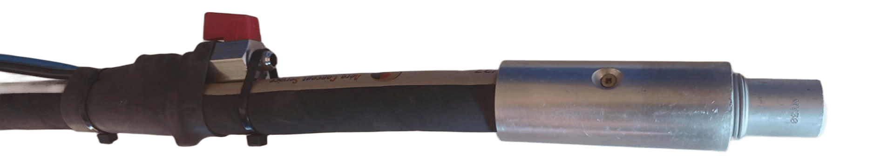

Redonnez vie à vos surfaces
Grâce à l’aérogommage, nous nettoyons, décapons et rénovons vos supports en douceur, sans les abîmer.
Supports rénovés par aérogommage

Meubles anciensDécapage et rénovation douce de buffets, tables et armoires anciennes.
Escaliers, portes & volets
Remise à neuf du bois et du métal sans abîmer les surfaces.
Poutres apparentes
Nettoyage et rénovation pour révéler le bois naturel.
Portails et métaux
Suppression de la rouille et des anciennes peintures.
Pierre
Nettoyage de la pierre et suppression des graffitis.
Objets décoratifs
Rénovation et mise en valeur de vos objets décoratifs.


avant / après


avant / après


avant / après

L’aérogommage : une technique douce et efficace
Subl'air est spécialisée dans la rénovation de meubles et de métaux par aérogommage à Rivière, près de Chinon en Indre-et-Loire (37).
Alternative plus douce que le sablage, l’aérogommage est une technique de décapage basse pression idéale pour rénover avec précision différents supports, comme les meubles, les métaux, la pierre ou les surfaces fragiles, sans les détériorer. Cette méthode offre un résultat propre, homogène et durable.
Zone d'intervention
Notre zone d'intervention couvre Chinon et les communes situées dans un rayon d’environ 30 km autour de la ville, en Indre-et-Loire (37), dans le sud de la Touraine, notamment Avoine, Bourgueil, Langeais, Azay-le-Rideau, ainsi que certaines villes du Maine-et-Loire (49), comme Saumur, et de la Vienne (86), comme Loudun.